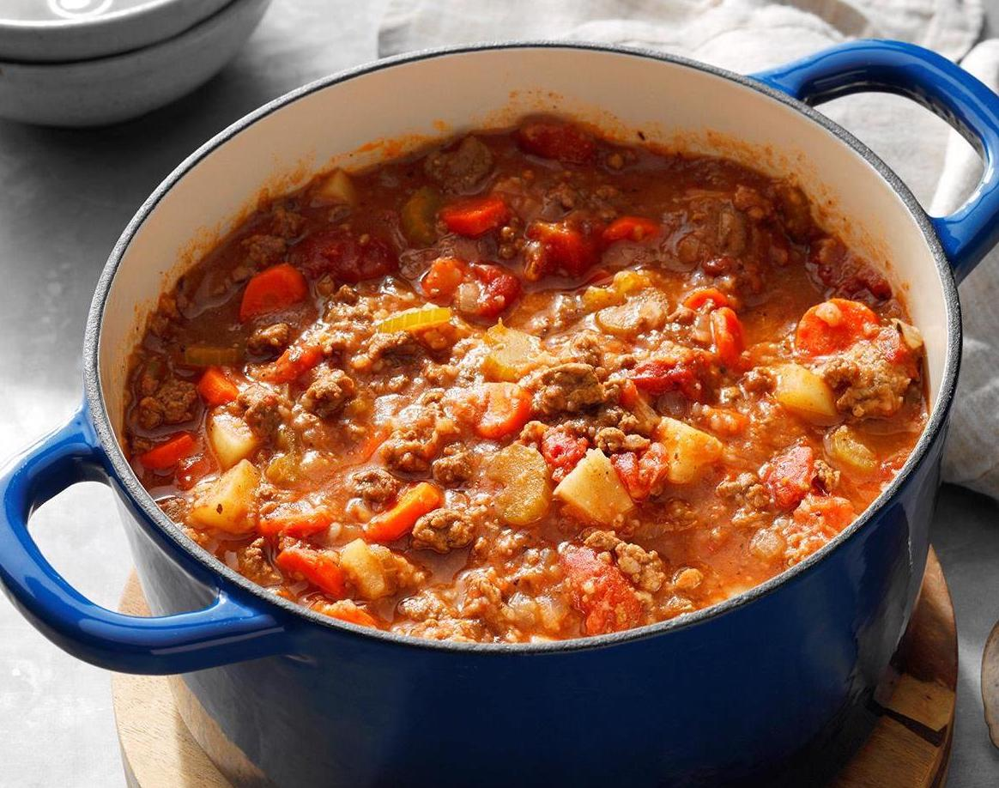

Beef & Potatoes
Description
A hearty meal with grass-fed ground beef and stew vegetables.
Recipe makes 4 servings.
Ingredients
- Lean grass-fed ground beef (900g)
- Beef bone broth (4 cups)
- Yellow potatoes, chopped (4 cups)
- Onion, chopped (2 cups)
- Carrots, chopped (1 cup)
- Celery, chopped (1 cup)
- Canned San Marzano tomatoes (large can)
- Avocado oil (2 tbsp)
- Frozen peas
- Salt and pepper
Steps
- Preheat frying pan over medium-high heat
- Brown ground beef in pan for 2 minutes
- Add ground beef and beef bone broth to crockpot or instant pot
- Add potatoes, onion, carrots, celery, canned tomatoes to pot
- Season liberally with salt
- Grind fresh black pepper to taste
- Add avocado oil
- Set slow cooker device to cook for 6-8hrs on lowest setting
- Add frozen peas 30 minutes before slow cooker is done